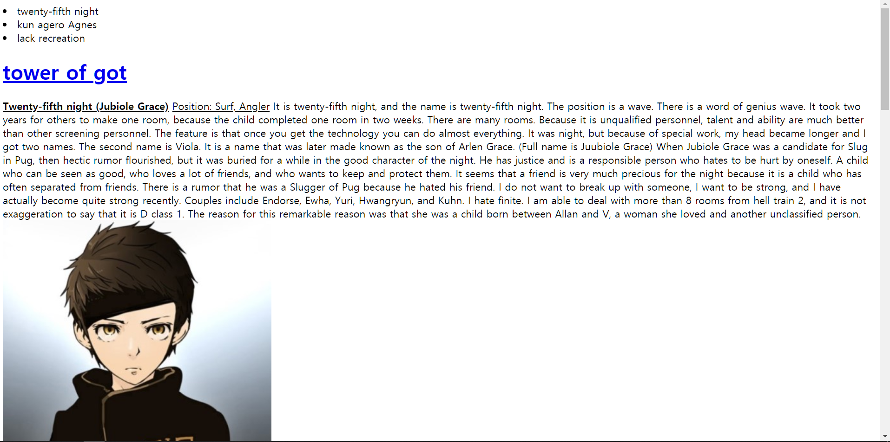
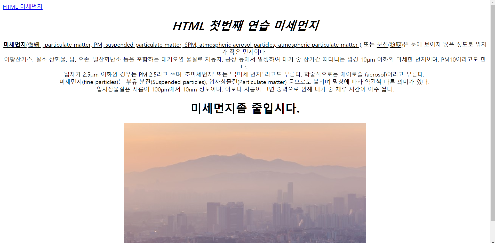

HTML부서
사용하는 에디터: Atom(링크)

html부서에서는 html을 위주로 다양한 tag와 HTMl의 사용법을 배운다.html부서에서는 '자신만의 웹사이트'를 만드는 것을 목표로 한다. HTML부서에서는 자신만의 웹사이트를 만든 후에 JAvaScript, CSS, Node.js 등 다른 웹프로그래밍 언어를 해보거나, 웹서버의 사용법이나 HPPTS등 웹과 관련된 모든 활동을 해볼 예정이다.
결과물

[나만의 웹사이트-이오름]

[나만의 웹사이트-신재욱]
뒤로가기